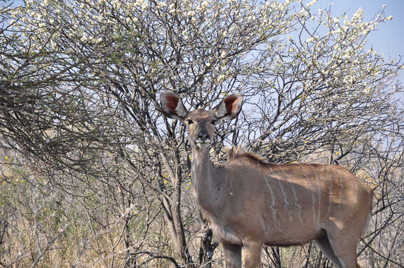

Nach einem überreichlichen Frühstück am gemeinsamen Esstisch im Rivendell haben wir Windhoek, das ganze Auto voll Trinkwasser, auch schon wieder verlassen. Die erste Etappe auf dem Trans-Kalahari-Highway lag vor uns. Die Straße ist makellos. Fast in deutschem Autobahntempo kann man hier durch die endlose Weite brettern. An den Seiten der Straße ist ein Korridor von ein paar Metern freirasiert, damit man die Ziegen, Kühe, Pferde oder Esel besser entdecken kann, die sich am Straßenrand die Bäuche voll Gras schlagen.. bevor sie vors Auto rennen.
Die Landschaft hat etwas verdorrt heideartiges. Netterweise sind in die Strecke viele seichte Kurven eingebaut, so dass man nicht sofort einschläft. Nach hundert Kilometern haben sich unsere Augen an die Landschaft gewöhnt und wir haben angefangen die kleinen Unterschiede wahrzunehmen. Die feine Modulation zwischen kleinen Büschen und mittleren Büschen oder sattgelbem Gras und blassgelbem Gras erscheint wie Tag und Nacht - genau das Richtige für Freunde von Action in evolutionärem Tempo.
Der Grenzübergang nach Botswana war nach der Bleifuß-Fahrt schnell erreicht. Doch hier holt Afrika den Ahnungslosen wieder ein. An einem halben Dutzend Stopps mussten wir Vertreter des einen oder anderen Lands mit einer beliebigen Kombination aus Nummernschild, Passnummer, Name oder Geld versorgen. Und es war alles anders, als die Autovermietung uns erklärt hart. Am Ende mussten wir einen Wisch bezahlen, den keiner sehen wollte. Aber da die Leute hier Zettel so lieben, will man ja kein Spielverderber sein - Hauptsache erst mal in Botswana. Nach zwei weiteren spannenden Stunden voller Savannen-Modulation hatten wir den Abzweig zum “Thakadu Bush Camp” erreicht. Der Reiseführer sprach von einer Piste, die gerade noch für Zweiradantriebe zu befahren sei, und hat damit ins Schwarze getroffen. Die drei Kilometer bis zum Camp haben sich als kleiner Game-Drive erwiesen. Der arme Polo ist fast im Sand stecken geblieben, fast auf dicken Steinen aufgesetzt und fast von Dornakazien zu Sashimi verarbeitet worden, doch dafür hatten wir die Ehre Straußen, Impallas und Hornbills mit ihren markanten säbelartigen Schnäbeln zu verjagen. Ein aufmunterndes “almost there” Schild hat uns schließlich zum Ziel geführt.
Unsere Hütte hat sich als sehr komfortabel erwiesen. Hier wird die nächtliche Kälte mit elektrischen Heizdecken bekämpft. Von der Terrasse aus konnten wir jede Menge große antilopische Viecher sehen, die sich um die nachts beleuchtete Tränke scharen. Eins davon steht auch gerne im Außenbereich der Bar herum.
